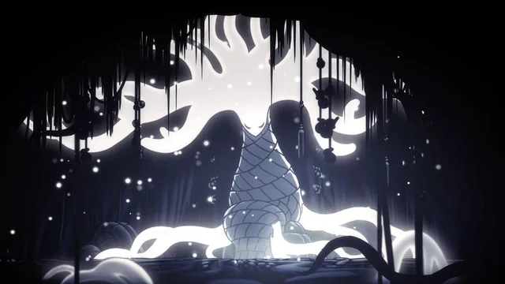

| Character | Faction/Location | Role in the Story |
|---|---|---|
| The Knight | Unknown / Hallownest | Protagonist exploring Hallownest |
| Hornet | Hallownest / Deepnest | Protector of Hallownest |
| Quirrel | City of Tears / Fog Canyon | Wandering scholar studying Hallownest |
| The Pale King | Hallownest | Former ruler; attempted to stop the Infection |
| The White Lady | Queen's Gardens | Queen of Hallownest |
| The Radiance | Remnant of Moth Tribe | Ancient higher being; source of the Infection |
| The Void | Abyss | Primordial darkness beneath the world |
| The Hollow Knight | Black Egg Temple | Vessel chosen to contain the Infection |
| Monomon | Fog Canyon / Teacher's Archives | One of the three Dreamers sealing the Black Egg Temple |
| Lurien | City of Tears / Watcher's Spire | Dreamer overseeing the capital |
| Herrah | Deepnest / Beast's Den | Dreamer and queen of Deepnest |

The Knight
The player character, commonly reffered to as The Knight, is a vessel that managed to escape The Abyss and returned to Hallownest to challenge the infection and ultimately fight the Hollow Knight.

Hornet
Guardian of Hallownest's ruins, and daughter of the Pale King and Herrah the Beast. She wields a long nail and chalenges and guides the Knight at several points in it's journey.
Quirrel
Initally just a traveler, who later comes to realise that he was the main disciple of Monomon the Teacher, and was called back to Hallownest to help the Knight break Monomon's seal.
The Pale King
A higher being born from the carcass of a great Wyrm. The founder of Hallownest and husband to the White Lady, as well as a consort to Herrah the Beast
The White Lady
A higher being whose origins are shrouded in mystery. Wife to the Pale King and Queen of Hallownest.

The Radiance
Ancient god of dreams and light. Creator of the Moth tribe and the source of the Infection. Ancient enemy of the Void
The Void
A dark being that posseses great strength, but has no unified will of it's own. Ancient enemy to the Radiance.

The Hollow Knight
A vessel chosen by the Pale King to contain the Infection and trap the Radiance. It was not pure and truly hollow, however, as it had been tainted by an idea instilled on it.

Monomon the Teacher
A jellyfish like being that Resides in Fog Canyon. A great scholor that worked with the Pale King to help stop the infection. One of the Dreamers, and mentor to Quirrel

Herrah the Beast
A member of the Weaver clan and the queen of Deepnest. Mother to Hornet and one time consort to the Pale King. One of the Dreamers.

Lurien the Watcher
One of the dreamers, who resides within the watchers spire in the City of Tears. Little else is known about him.